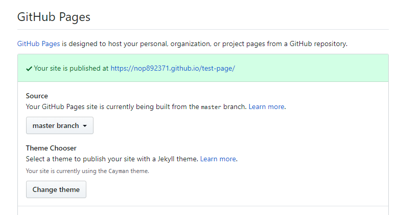

Github Pagesについて#
Github PagesはGithubリポジトリをWebサイトとして公開できるGithubの機能です。
Githubのアカウントがあれば誰でも使えます。
GitHub PagesでWebサイトを公開するには#
概要
GitHubにリポジトリを作成し、GitHub Pagesの設定をオンにします。
- Githubリポジトリ作成
githubにpublicなリポジトリを作成します。※privateリポジトリをGitHub Pagesで公開できるのは有料会員のみのようです。nop892371/test-page
- 作業ワークフォルダをローカルに作成
git cloneでリポジトリtest-pageの作業ワークフォルダをローカルに作成します。 - ファイルをリモートにpush
何かファイルを作成しgit pushします。
リポジトリに何か1つファイルを置かないとGithub Pagesを公開できません。
ここではリポジトリ直下にindex.mdを置いてみます。# トップページ トップページです。
- リポジトリ設定の変更
リポジトリのsettingタブをクリックし設定画面を開きます。- ソース設定
GitHub PagesのセクションでSourceを設定します。
以下ではmaster branchを設定しています。  これでmasterブランチのルートフォルダがwebサイトのルートフォルダになります。 - テーマ設定
上図でChange themeをクリックしテーマを選択します。
- ソース設定
- サイトの確認
以上でGitHub Pagesのサイトが作成されました。
指定のURLが表示されれば成功です。
mkdocsで作成したサイトを公開するには#
mkdocsで作成したサイトをGithub Pagesに公開する手順を示します。
- mkdocsでサイトを作成する
mkdocsでサイトを作成します。buildでsiteフォルダが作成されます。mkdocs new test-page cd test-page code . <※vscodeにてdocsフォルダ以下にドキュメントを作成> mkdocs build
- git push
git pushでサイトをアップする - アクセスしてみる
https://nop892371.github.io/test-page/site